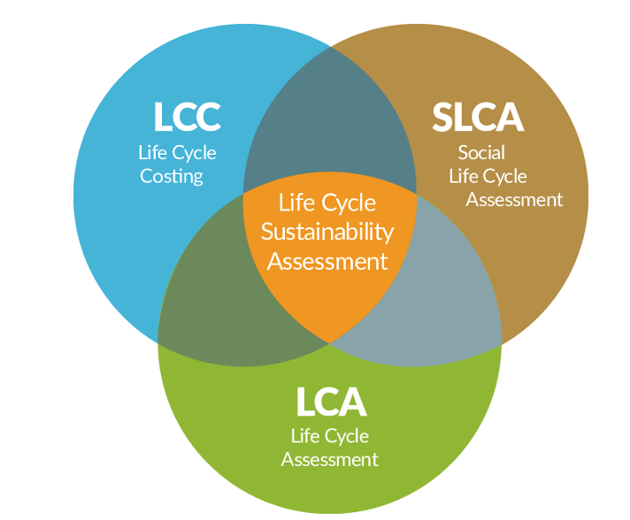

A Life Cycle Sustainability Assessment (LCSA) brings three well-established methods under one roof. Rather than judging a library on its carbon footprint alone, it looks at the environment, the money, and the people at the same time — across the full life cycle of a service.

Environmental
Life Cycle Assessment — energy, CO₂, water and resource use across the full life cycle.
Economic
Life Cycle Costing — investment and operating costs (CAPEX / OPEX) and the value created.
Social
Social LCA — access, inclusion, working conditions and the safeguarding of cultural heritage.
Why combine them?
Looking at only one pillar hides the trade-offs. Digital access, for example, can raise social reach while adding to energy use; a cheaper option might cut cultural value. Assessing all three together makes those tensions visible — and turns them into informed decisions rather than guesses.
How it works
Functional unit
A clear, quantifiable unit of a library's service — e.g. one year of operating a collection, or one reading session of a newspaper — so physical and digital can be compared like for like.
System boundaries
An explicit definition of what is in and out of scope, from acquisition and storage to digitisation and access.
Consistent indicators
Standardised environmental indicators, life-cycle costs, and a set of social indicators adapted for libraries.
Interpretation
Results are read together to surface hotspots, trade-offs and “low-hanging fruit” for improvement.
In ReVerDi the LCSA is applied to three national libraries and to specific media processes such as newspapers, comparing physical and digital pathways.